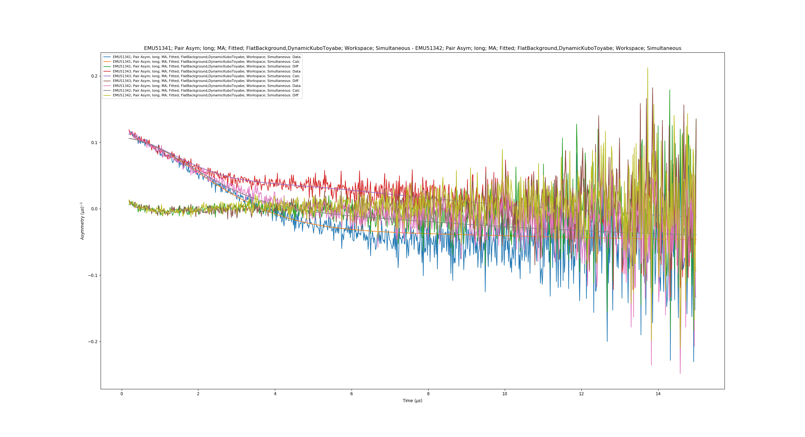
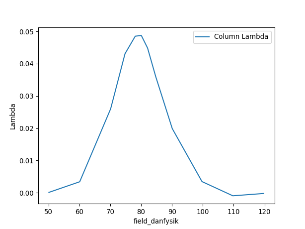

Muon Unscripted Testing: EMU¶
Table of Contents
Introduction¶
These tests are for the EMU instrument at ISIS. This section will show some advance fitting and plotting features of the GUI. It would be worth closing the muon GUI and clearing the ADS before doing the second test. This is to give a clean state so it is easier to find the correct results table.
Ionic Diffusion Test¶
Time required 5 - 10 minutes
- Open Muon Analysis (Interfaces > Muon > Muon Analysis)
- Change Instrument to EMU, found in the Home tab
- Load runs
51341-3 - Go to the Fitting tab
- Check the Simultaneous fit over checkbox, and change from Run to Group/Pair
- Right click the empty table area; Select Add Function
- Add a FlatBackground (Background > Flat Background)
- Similarly, add DynamicKuboToyabe (Muon > MuonGeneric > DynamicKuboToyabe)
- Check the Global checkbox for the parameters A0, Asym, Delta and Nu
- Set
A0 = 0.05,Asym = 0.15,Delta = 0.2andNu = 0.1 - Click the value for the Field parameter; A
...should appear next to it, click it. A new window should appear - Check the box called Log
- Change the log to be field_danfysik
- Click a row in the table
- Click the Set drop down menu and choose Set all to log
- Do the same but this time choose Fix all, then click Ok
- Click Fit
- Expected Values are (similar to within 50%):
- f0.A0:
-0.0467 - f1.Asym:
0.155 - f1.Delta:
0.389 - f1.Nu:
0.474
- f0.A0:
- Go to the Fitting tab
- Remove the
DynamicKuboToyabefunction - Uncheck the Simultaneous fit over checkbox
- Press fit
- Tick the
Exclude Rangeoption in the table - Enter values of 0 to 6
- Press fit, notice that the fit line moves to lower y values
- Remove the
- In the plotting window click the
External Plotbutton - You should get a plot that looks like the following:

Superconducting Copper Test¶
Time required 5 - 10 minutes
- Open Muon Analysis (Interfaces > Muon > Muon Analysis)
- Change Instrument to EMU, found in the Home tab
- Load run
20889-20900 - Using the > button, step through a couple files (Plot should update each time)
- Go to the Fitting tab
- Right click the empty table area; Select Add Function
- Add ExpDecayMuon (Muon > MuonGeneric > ExpDecMuon)
- Go to the Sequential Fitting tab
- Click Sequentially Fit All
- Go to the Results tab
- At the bottom of the interface, click Output Results
- Notice that the text for the output button is now in red (to warn the user they will overwrite it)
- Change the name to “Results2” and it will turn black again
- Above the log values table is a case sensitive search bar
- Add the “run_number” and “Field_Danfysik” logs by ticking them
- Click Output Results
- Go to the Model Fitting tab
- In the
Results tablecombobox you will see that two options are listed - Pick “Results2”
- Set the
Select Datatofield_danfysikandLambda - The plot will look similar to the one below
- Add a peak function (e.g. Gaussian)
- You should be able to fit to the data
- Pressing the
Covariance Matrixbutton will give a pop up containing it - Ticking the
Errorsbox below the plot will show the error bars on the data along with a shaded region - Change
Plot guess usingto “Uniform points across data range” - Tick
Plot guess, a smooth curve will appear
- In the
- The x and y values below the plot can be used to zoom in on specific regions of the data
